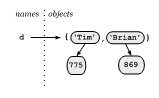

The full list of methods is in Section 2.2.7 of the Python Library Reference. Here's an idea of how you might use and combine these methods to carry out common operations.
Create a dictionary,
Using a dictionary literal*, e.g. d = { 'Tim' : 775, 'Brian' :
869 } we can visualize the dictionary that is created like this,

Access an element,
print d['Tim']The general pattern here is dictionary_name[ key ] =
value. So to modify a value,
d['Tim'] = 820and to insert a new value,
d['Doug'] = 870Check to see if there is already an entry with a particular key,
d.has_key('Brian') will return Trued.has_key('Jill') will return Falseor alternatively,
'Brian' in d will return True'Jill' in d will return FalseDelete an entry in the dictionary (both the key and its associated value),
del( d['Brian'] )Remove an entry, but get the value,
d.pop('Tim') removes the key value pair 'Tim':820 from the
dictionary but returns 820Find out how many key-value pairs are in the dictionary,
len( d )Get a list of all the keys in the dictionary,
>>> d.keys()
['Tim', 'Doug']
>>>(Note the square brackets and commas: d.keys returns a
list.)
This is often used for iterating through the entries in the dictionary, e.g.
for key in d.keys():
print key, ':', d[key]produces the output,
>>> Tim : 820 Doug : 870 >>>
In recent versions of Python this can be shortened to,
for key in d:
print key, ':', d[key]Get a list of all the values that occur in a dictionary,
>>> d.values()
[820, 870]
>>> Delete all the entries in the dictionary,
>>> d.clear()
>>> d
{}
>>> Note that the name d still exists; it just references (points
at) an empty dictionary.
Finally note that the keys don't have to be strings they can be any immutable type, and the values can be any Python object, e.g.
>>> d['Tim'] = 775
>>> d[3] = ['a', 'small', 'list']
>>> d[(0,1)] = 'X'
>>> d
{(0, 1): 'X', 'Tim': 775, 3: ['a', 'small', 'list']}
>>> for key in d:
print key, ':', d[key]
(0, 1) : X
Tim : 775
3 : ['a', 'small', 'list']
>>> * Literals are how to write out values.
4 is an integer literal,4.1 is a floating point literal,'Tim' is a string literal,[0, 'Hi'] is a list literal (notice the square
brackets),(0, 1) is a tuple literal (notice the round parentheses),
and{ 'Tim' : 775, 'Brian' : 869 } is a dictionary literal
(notice the curly brackets).